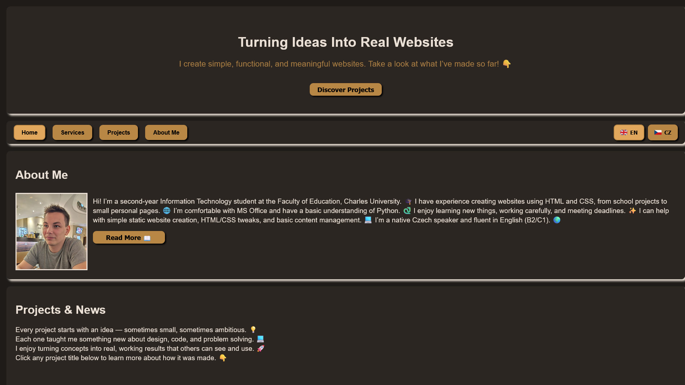
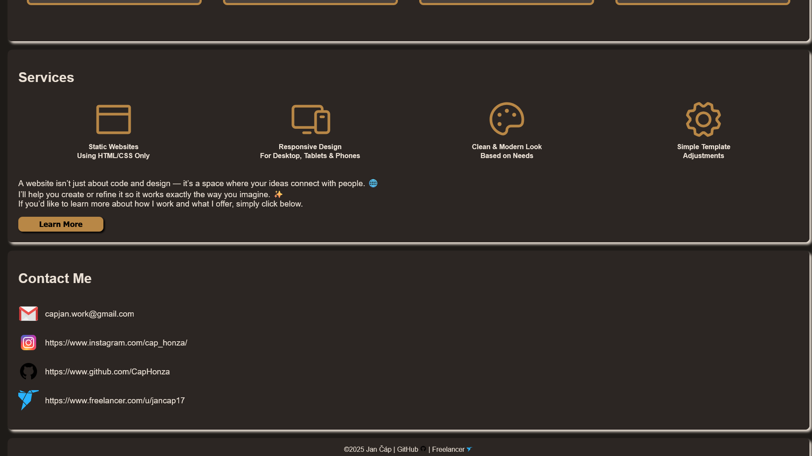
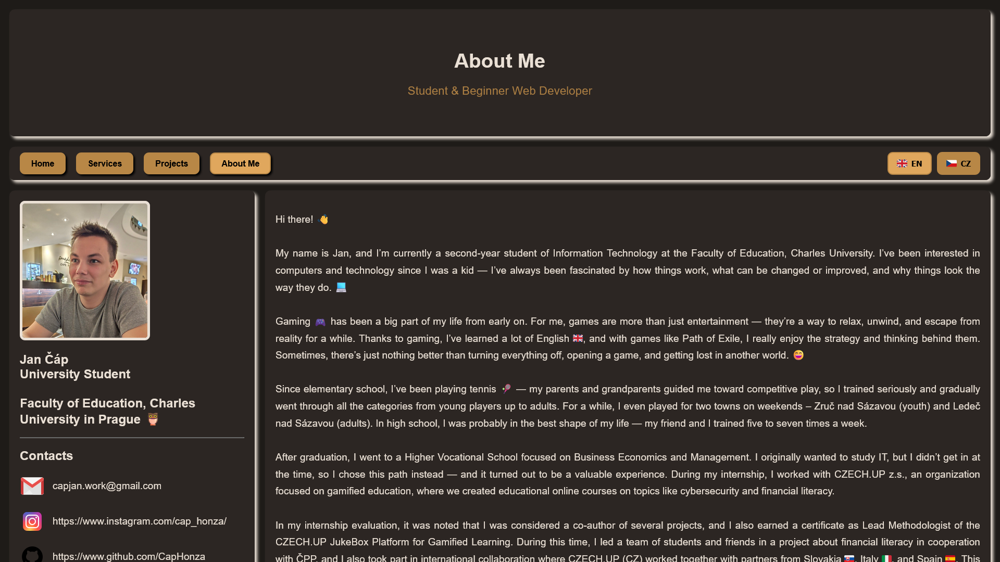
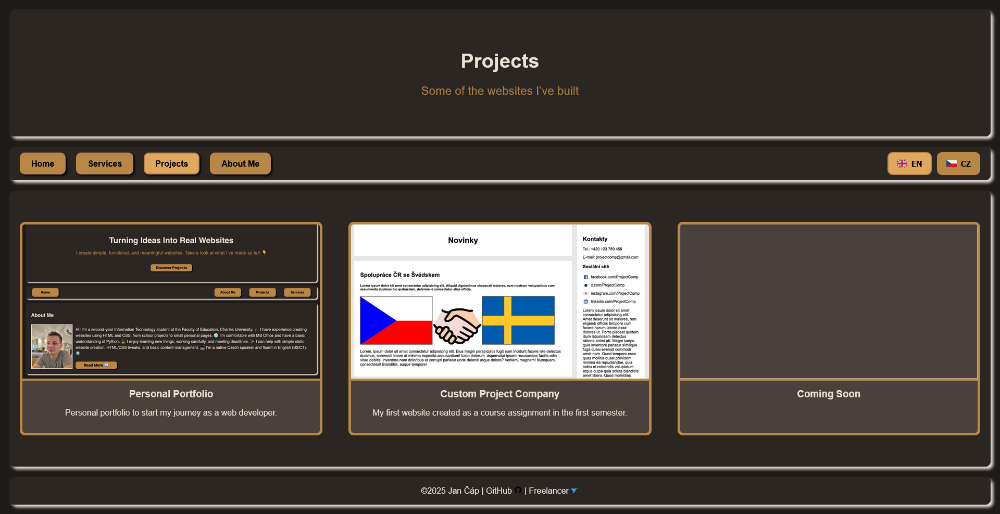
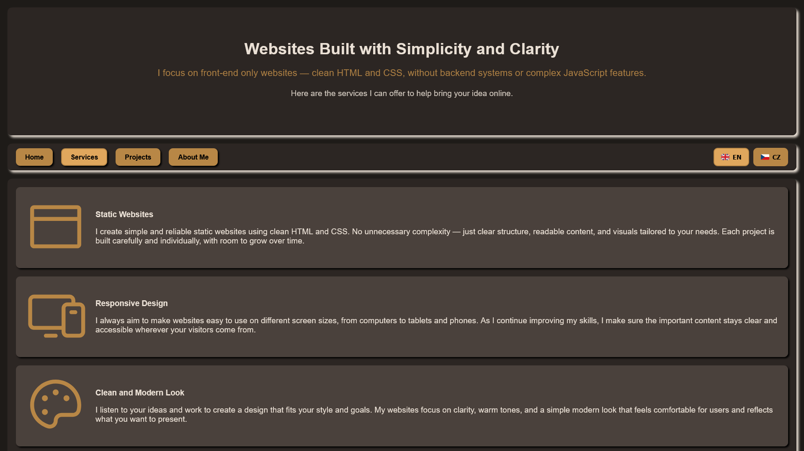

Datum
2025
Můj první samostatně navržený, vytvořený a optimalizovaný webový projekt.

Datum
2025
Kategorie
Vývoj Webu
Technologie
HTML, CSS, JavaScript, SVG
URL
Toto je můj druhý web, vytvořený po delší pauze od programování, kdy jsem chtěl navázat na své dovednosti v oblasti webového vývoje. Rozhodl jsem se vybudovat osobní portfolio jako místo pro prezentaci svých projektů, představení sebe a usnadnění kontaktu s těmi, kdo si chtějí mé práce prohlédnout.
Účelem této stránky je být mojí profesionální online vizitkou při začátcích s hledáním zakázek na volné noze. Plánuji ji průběžně aktualizovat a rozšiřovat, jak budu dále růst, učit se nové věci a vytvářet další projekty.




Projekt byl vytvořen pomocí HTML, CSS, SVG a základního JavaScriptu (pro funkci přepínání jazyků). Po delší pauze od kódování jsem si chtěl zopakovat a vylepšit své frontendové dovednosti při tvorbě něčeho osobního a smysluplného.
Původní myšlenkou bylo vytvořit jednoduché portfolio použitelné na platformách jako GitHub nebo portály pro freelancery. Koncept se ale rychle rozšířil do osobní webové stránky, kde mohu prezentovat sebe, své projekty a budoucí práci na jednom místě.
Začal jsem kreslením návrhů na papír, plánováním rozložení a psaním obsahu pro jednotlivé sekce. Poté jsem web postupně stavěl krok za krokem — tag po tagu — s neustálým vylepšováním, opravováním a dolaďováním detailů.
Tvorba mého osobního portfolia mě naučila širokou škálu nových frontendových technik. Pracoval jsem například s CSS Gridem pro strukturu rozložení, aspect-ratio pro správné měřítko obrázků a vylepšenou sémantiku HTML pro přehlednější a přístupnější strukturu stránky.
Byl to můj první plně samostatný projekt — bez daných pravidel nebo návrhů. Naučil mě, jak plánovat, navrhnout a postavit web od základu, dělat rozhodnutí samostatně a průběžně zlepšovat výslednou podobu.